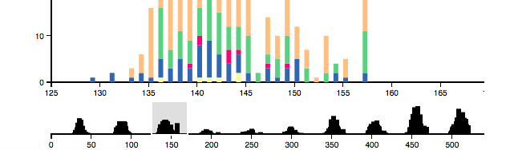
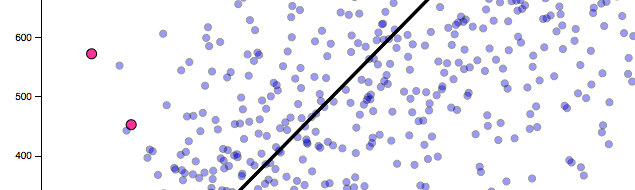

"There is magic in graphs." ~ Henry D. Hubbard
This project is maintained by jenfs
A zoomable, stacked bar chart and a cartogram show geographic and temporal trends. Implemented in D3. 
Compares the ranking of n-grams between two different subsets of Google Local restaurant reviews. Implemented in D3. 
Google Local reviews comprise a network: nodes are users or restaurants; edges are reviews. Here, the 5-core decomposition in 6 different cities is visualized. Implemented via Cytoscape.